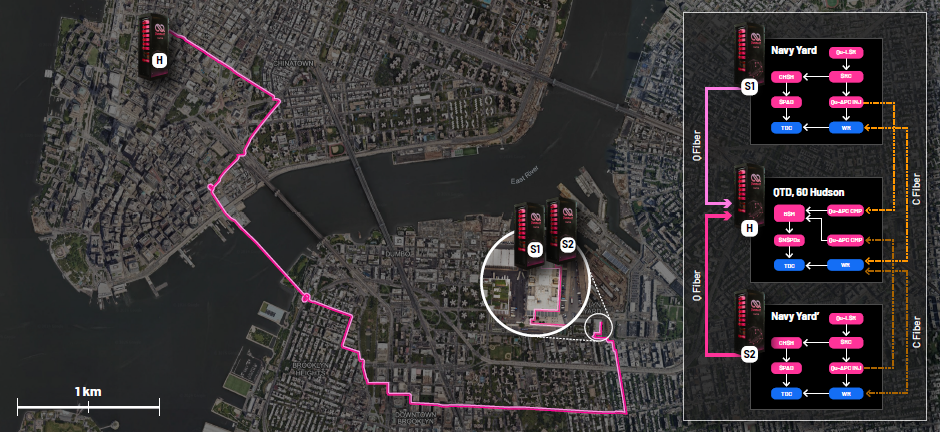
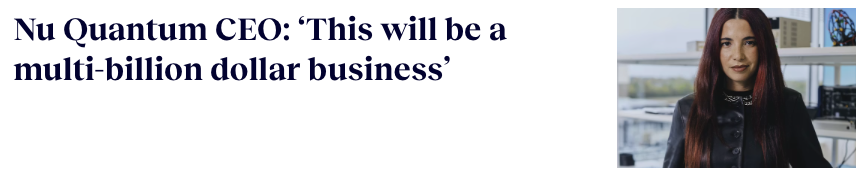
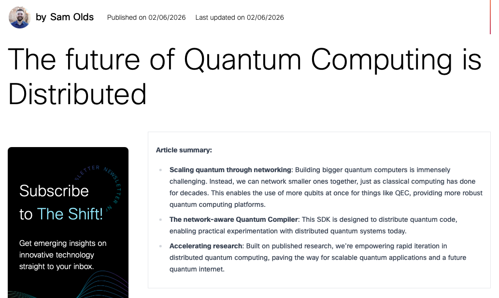
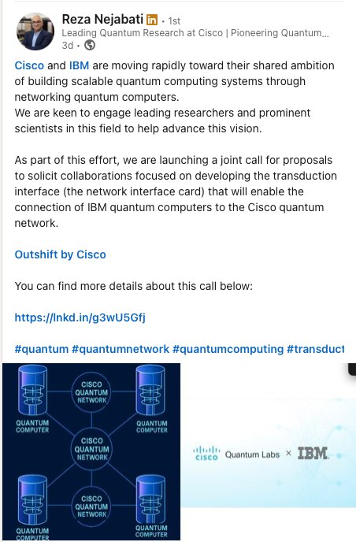
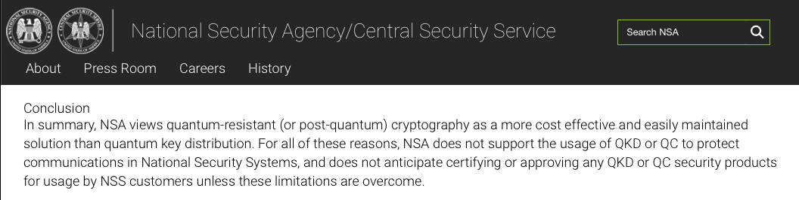
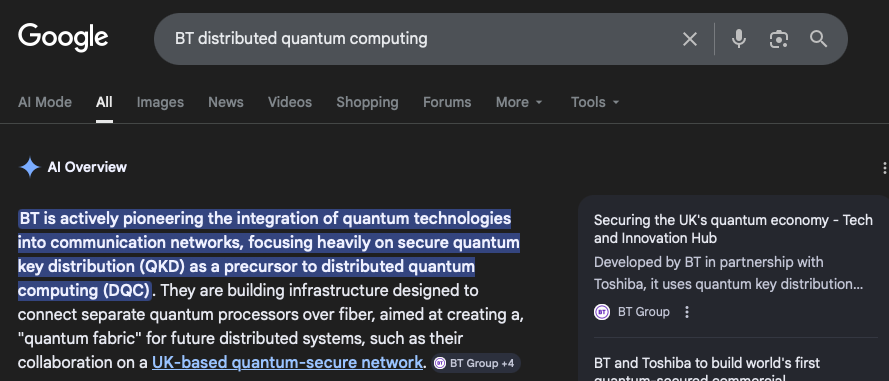

The Distributed Quantum Computing industry
16th of March 2026
A snapshot into who is doing what in the DQC industry in early 2026. There are probably more players than you expect!
Pure play DQC
Pure play DQC companies are those whose primary mission is to build the hardware and software infrastructure for distributed quantum computing / related applications such as the quantum internet. They can include both quantum networking and quantum computing companies. I divide them into two teams: hardware and software.Hardware
Qunnect

Qunnect is the first quantum networking infrastructure company I even came across, and perhaps one of the very first in the field. It's a Brooklyn startup aiming to build deployable hardware capable of distributing entanglement over existing fiber networks (aka they do quantum networking). They are pretty focused on real world deployability, a lot of their hardware operates at room temperature and is designed to integrate with standard telecommunications infrastructure rather than laboratory environments. Their main product line, the Carina suite, bundles the core components required to run a quantum network into rack-mountable units. This includes entangled photon sources, quantum memory, photon detectors, synchronization electronics and control software. In essence, the goal is to make quantum networking hardware look and behave like standard telecom equipment. Over the past few years Qunnect has focused heavily on field demonstrations. Their GothamQ network in New York distributes entanglement across 17.6 km of deployed fiber connecting sites in Brooklyn and Manhattan. The system combines Qunnect’s hardware with Cisco’s orchestration software and has demonstrated metro-scale entanglement swapping under real urban conditions. Beyond New York, their technology is also being tested in Berlin with Deutsche Telekom’s T-Labs, at CERN’s quantum networking laboratory, and in several US research testbeds. The company is still relatively small (I believe under 50 employees) and has raised roughly $20M in funding across funding rounds, but it has positioned itself as one of the most visible players trying to move quantum networking out of physics labs and into operational infrastructure, collaborating with giants such as Cisco and Deutsche Telekom.
Nu Quantum
The apple of everyone’s eye in the distributed quantum computing space. Nu Quantum is currently (or at least claims to be) the most heavily funded startup in this part of the industry and, perhaps surprisingly it is European.


To enable this the company is developing what they call a Quantum Networking Unit (QNU). The device effectively acts as a network interface for quantum computers, converting stationary qubits into photonic qubits that can be transmitted through optical fibers and used to generate entanglement between processors. In other words, they are trying to build the quantum equivalent of a network card. Just like classical servers use network interfaces to communicate inside a datacenter, future quantum processors may rely on QNUs to connect to other quantum processors through photonic links. Nu Quantum does not build the processors themselves. Instead they focus on the photonic interconnect layer that allows those processors to talk to each other. Their hardware is designed to interface with a range of qubit platforms and is currently being explored with several hardware partners including Rigetti and Oxford Ionics, as well as within the UK National Quantum Computing Centre ecosystem. The company has grown rapidly over the past few years within the Cambridge quantum ecosystem and now employs roughly on the order of a hundred people. Alongside strong UK backing they have also received support from European initiatives and Spanish innovation programs, recently expanding operations to Madrid. They also have ties with Cisco, BT, Amadeus Capital Partners, IQ Capital and Tokyo Electron. Interestingly, Nu Quantum is also among the few industrial groups exploring how quantum error correction might work in distributed architectures (they love their Floquet codes).
QphoX
But what do I do if my qubits (ehem ehem superconducting) don't like to be converted into photons (or, you know, emit them naturally when de-exciting)? Most quantum networking proposals rely on optical photons traveling through fiber. Platforms such as trapped ions or neutral atoms can naturally emit photons and are therefore relatively easy to integrate into photonic networks. Superconducting qubits, however, operate in the microwave domain. They communicate using microwave photons which cannot travel long distances and are extremely sensitive to thermal noise. This makes direct networking of superconducting processors essentially impossible without an intermediate conversion step. In comes QphoX, a Dutch spinout from TU Delft (arguably one of, if not the best, schools out there for quantum networking). QphoX aims to build quantum transducers capable of converting microwave photons into optical photons and back again. Their devices rely on optomechanical systems that couple microwave resonators, mechanical oscillators and optical cavities to coherently convert quantum signals between the two regimes. Aka they are trying to connect superconducting qubits to quantum networks (aiming to overcome perhaps the only caveat on the road to field monopoly for superconducting qubits). The company employs over 150 people (I can't quite tell how many are permanent) and has reached about $26 million in funding, but has quickly attracted attention from several hardware groups exploring distributed architectures. Honestly no wonder, without this type of tech superconducting qubits can say goodbye to scalability.Software
Got our hardware, now who is building our software?Aliro
Like in hardware, I'll start with the first company I ever encountered in this space: Aliro. They are another Boston based startup, and have been operating for about 6-7 years now. Their main platform, AliroNet, provides tools for simulating, managing and orchestrating entanglement distribution across networked quantum devices. Their collaborations span AWS, Cisco and IonQ, and they have strong ties to US quantum networking initiatives (their CTO is a prof at UCLA, previously Harvard). With over 17 million in funding under their belt, they are one of the few companies building the control layer for quantum networks.Qoro
Before continuing, a small disclaimer: I have worked with the founders of Qoro back at Cisco and know them. That said, their work is genuinely interesting in the context of distributed quantum computing. Qoro is a relatively young company (July 2024) operating at the intersection of quantum networking and distributed quantum execution. Rather than building hardware, their focus is on the software layer that decides how quantum workloads should be executed across multiple processors. Their core idea revolves around identifying and exploiting parallelism in quantum programs in order to distribute them efficiently across networked quantum processors. They talk about different "levels" of parallelism, from low-level gate parallelism to higher-level algorithmic parallelism, and how to map these onto a hybrid quantum architectures. In practice this means analyzing a quantum program, identifying independent subroutines or communication boundaries, and scheduling them across different nodes in a quantum network. In some sense, they sit somewhere between a compiler and a distributed runtime system. If quantum processors eventually resemble a cluster of specialized accelerators connected through photonic links, then something like Qoro’s orchestration layer will be required to determine how tasks are split, synchronized, and recombined. Like Qunnect, they are particularly interested in the networking side of distributed quantum computing rather than purely local compiler optimizations. The assumption is that future quantum hardware will not scale as a single monolithic processor, but rather as collections of smaller collaborating quantum and classical processors. The company is still early stage, but it represents an emerging class of startups focusing specifically on the software infrastructure required to make distributed quantum computing practical.
Wellinq
Another interesting player on the software side is the company Wellinq. The 4 year old company focuses on the compiler and architecture layer required to operate modular quantum computers. According to the Sorbonne University webpage they are "specializing in the interconnection of quantum processors and quantum communication networks. [Their] solutions are based on the world's highest-performance quantum memories, based on clouds of laser-cooled atoms." So presumably they are building hardware, although I mostly know them for their software work on quantum compiler optimizations for distributed systems (they arguably have the most advanced distributed quantum compiling and optimisation research out there). They collaborate with several European hardware groups and is part of the broader (and relatively successful thus far) French industrial quantum computing effort.
Quantum Computing companies dabbling in DQC
Now there is another family of quantum computing companies that will self claim to be pure DQC play. They are not wrong but they are certainly cheeky about it: photonic quantum computing companies. Photonic quantum computing is a paradigm that uses photons as qubits and relies on linear optical elements to perform quantum operations. In a sense they are naturally distributed, since the qubits are already photons that are transmitted through optical fibers. As I said, a cheeky but not wrong claim.Photonic Quantum computing: it's claim to DQC
Xanadu
Xanadu is one of the oldest quantum computing companies and arguably the most visible one in the ecosystem. The company was founded in Toronto in 2016 and has raised more than $250 million in funding across several rounds. It is planning to come out to public markets through a SPAC merger, making it one of the quantum computing companies about to join the publicly traded club. Their approach relies on continuous-variable photonic quantum computing, where squeezed light states are manipulated using optical interferometers and measurements. Rather than fabricating large monolithic chips, Xanadu’s architecture produces streams of photonic qubits that propagate through optical circuits. Because photons can be routed through fiber or waveguides, Xanadu has framed their systems as early examples of distributed quantum computing, claiming their 2022 Aurora system as the first modular and networked photonic quantum computer. To my knowledge it was never made available to the public. And whether it qualifies as full distributed quantum computing is debated. The modules involved are tightly integrated within the same experimental system rather than separated processors collaborating across a network. They are not fully "separate" systems, but rather different components of a single photonic architecture. Still, their architecture does make modular scaling natural, and many see photonic cluster-state generation as a realistic path toward large-scale distributed quantum computing.
PsiQuantum
PsiQuantum is one of the most heavily funded companies in the quantum computing industry and a major proponent of photonic architectures. Also founded in 2016 (in the UK rather than Canada), the company has raised well over $700 million in public and private funding. Their strategy is to build a fault-tolerant photonic quantum computer using silicon photonics manufactured in conventional semiconductor fabs. Rather than developing small noisy devices, PsiQuantum aims directly at a million-qubit scale machine capable of running error-corrected algorithms. Interestingly, they do not strongly market themselves as a distributed quantum computing company. Their public narrative focuses more on building a single very large machine. Which is probably an honest take, yet it would have been weird for me not to mention them in a photonic DQC section.Photonic Inc
This one took me by surprise a few weeks ago to be honest. I had somehow never heard of them before, which is slightly surprising given their size. Founded in 2016 and based in Vancouver, Photonic Inc has raised roughly $140 million in funding (nothing to laugh at). Despite the name, Photonic Inc is not a pure play photonic company. Their architecture combines silicon spin qubits with photonic links, very much with distributed quantum computing in mind. The idea is to store quantum information in long-lived spin states while using photons to connect modules and generate entanglement between processors. Because of this they lean quite heavily into the DQC narrative and clearly bet on networking as part of the scaling story. And to be fair, all the key words are there: Distributed Quantum Computing / Fault Tolerant Computing / Scale up, Scale out, Scale performance. That is quite a sweet shopping list.
IONQ
IonQ is one of the few major quantum computing companies that has recently made a very explicit move toward distributed quantum computing. Founded in 2015 in the US, they are the only pure-play quantum computing company that, to my knowledge, is playing around with billions (much of it arising from equity offerings). And they have been spending that money. Last year they acquired the Boston startup Lightsynq, a group developing photonic interconnects and quantum memory technologies designed to link quantum processors together. The idea is fairly straightforward: trapped-ion processors can already emit photons, which makes them relatively well suited to photonic networking. By integrating Lightsynq’s technology, IonQ hopes to connect multiple quantum processors and scale systems through modular architectures rather than a single giant machine. Lightsynq (similarly to Aliro) was originally founded by researchers coming out of Harvard’s quantum networking ecosystem and had been developing optical interconnects and repeater-style technologies aimed at multi-node quantum systems. IonQ’s acquisition aims to bring those capabilities in-house, along with a portfolio full of patents related to quantum memory and networking. Taken together with a number of other acquisitions the company has made around networking and communications, IonQ seems to be paying its way to build large interconnected quantum systems.
Giants stringing DQC
Beyond startups, several large technology companies are quietly (or loudly) positioning themselves in the DQC landscape. None of them are pure-play DQC companies, but many clearly expect that if quantum computing scales, it will require networking. Unsurprisingly, many of the names appearing here are companies that already did this the first time around, when we built the classical stuff. Dragons re-emerging or slow giants that will waste a few billion? Only time will tell. But my bet is on the fact that many of the company founders from the above companies may be dreaming of a sweet acquisition by the guys below.,
Cisco
Cisco deserves a mention here for obvious reasons: it is where I first started my journey into quantum networking. I still have a lot of love for the company and the researchers there, although it feels like that chapter was a lifetime ago and the internal landscape has changed quite a bit since then. So like most of you, I am mostly privy to the public information these days.
They have been involved in a number of collaborations across the quantum networking ecosystem, including projects with Nu Quantum, IBM, and Qunnect. From the outside it very much looks like they want to position themselves as the networking backbone of the quantum era, which, given their history, is a logical move. In other words, Cisco wants to be the Cisco of the quantum internet.
Much of their quantum work is happening within Cisco’s research organization rather than their traditional product divisions. Their R&D branch(Outshift) operates somewhat independently and has been exploring both quantum networking and AI infrastructure. They have established a number of experimental labs, including facilities in California where they run networking experiments and prototype architectures for future quantum networks. Some of their research outputs are already "public", although — ahem — yet to be delivered.

Nvidia
Nvidia’s angle on DQC is a bit different. And their pay is eye watering.
From what I have gathered in between their marketing stunts, their vision revolves around heterogeneous computing systems where classical GPUs orchestrate and accelerate quantum workloads. The company’s CUDA-Q platform supports distributed simulation of quantum circuits across GPU clusters for this purpose. And they loooveee framing quantum processors as future accelerators inside large HPC environments (not wrong).
So it's really not about quantum computing or networking but rather about orchestrating the offloading of quantum workloads into QPUs when they are available/cheaper/saves time/possible or offloading classical computing into quantum (in the future). A similar take to Qoro's and as you will see below Fujitsu's, but with a much more explicit focus on the classical side of the equation (after all that's their main area of expertise and they are still putting together their quantum team).
IBM
IBM is another company I have previously worked with, and one that clearly has strong incentives to think about distributed quantum computing.
Their roadmap has long hinted at modular architectures, particularly since the introduction of their Heron processor generation and the broader system-level roadmap for scaling beyond single chips. IBM has also openly collaborated with networking companies such as Cisco on early quantum networking demonstrations.
Whether IBM ultimately scales through larger monolithic processors or interconnected modules remains to be seen, but the direction of travel increasingly points toward some form of modular or networked architecture. Their qubits of choice (superconducting) are the current bottleneck. "Fixing" the superconducting to photonic interconnect problem has been a battle the company has been fighting for some decades now. Will they succeed or swap them out? We shall see, but I doubt they will give up on their monopoly over the quantum space. And their spirits certainly seem to be high, they've recently put out a funding call on this precise topic alongside the Cisco team:

Toshiba
Toshiba takes a somewhat different angle (a very historic one for them): quantum key distribution (QKD). Although not quite QKD, do let me have this one. Toshiba has been investing heavily in quantum communication technologies for decades and inarguably operates one of the most mature QKD programs in industry. Their Cambridge laboratories in the UK have produced several real-world deployments of quantum-secured metropolitan networks. They were in this game long before the current quantum computing hype and have been steadily advancing their photonic technologies for secure communication applications.
As their own website states:
“We’re Quantum Security Pioneers. Toshiba has been at the forefront of quantum computing technology since 1999. Our solutions underpin the world’s first quantum-secured metro network and enable quantum-safe communications infrastructure.”
The question at hand though is whether QKD alone represents the long-term direction for quantum networking. Some government agencies (particularly in the US) have expressed skepticism about relying solely on QKD as a security solution, preferring post-quantum cryptography instead.

But if this is no longer the case do let me know! I'd be interested tbh, never been truly convinced by the anti-QKD argument. Perhaps work a future blog post? Whilst you await that here is a good article on the topic.
Fujitsu
Fujitsu is taking a hybrid stance, focusing on systems that combine classical HPC infrastructure with quantum devices. The company has been active in collaborative projects around hybrid quantum-classical computing and is investing in software platforms that integrate quantum processors with existing supercomputing environments. In that sense their strategy resembles Nvidia’s: treat quantum processors as specialized accelerators inside larger distributed computing infrastructures rather than standalone machines. But they seem to be (at least in the public eye) a bit more advanced in their quantum hardware research.
Juniper
Juniper Networks is a bit of an open question for now. The company has been exploring post-quantum cryptography and quantum-safe networking features in its routing software, which suggests they are at least paying attention to the space. I did come across them in this context back in 2021, and I doubt the interest has fully subsided. But, whether they will eventually expand into quantum networking infrastructure remains to be seen. It would not be surprising if traditional networking companies to start preparing but try to wait it out as much as possible. After all they can always acquire later?
BT
BT (British Telecom) is another THE company that repeatedly shows up in quantum networking discussions in the UK. And as someone working and living here, I've come across them. To be specific I keep running into their researchers at the NQCC hackathons (yearly events organized by the UK National Quantum Computing Centre where industry-led student teams prototype quantum applications and infrastructure ideas).
In 2014, they have collaborated with Toshiba, ADVA Optical Networking and NPL in a small-scale field trial of QKD technology deployment over a fibre network. They have also been working on satellite quantum transmissions, working alongside the European Space Agency and ArQit (quantum security company). A bit like Toshiba, you could argue they don't quite do DQC, and perhaps they won't, or if I am to trust the Google AI Overview (please do not do this): they are "focusing heavily on secure quantum key distribution (QKD) as a precursor to distributed quantum computing (DQC)".

My honest thoughts
The quantum computing industry landscape is clearly oversubscribed. Not because there are enough people moving it forward and doing meaningful work to bring about this incredible technology. But because of the infamous qubit wars: we have too many different providers building these specialized HPC units which will always be relatively rare. We won't need 50 different quantum computer providers, what we need is probably 10-20 quantum computers around the world that work well. Those are different asks, and perhaps the early stage competition of having 50 providers now will push us towards that future. I hope it will. But what I genuinely do believe is true, is that these devices will always be more useful in distributed frameworks. This is the case already with HPC and the aspects that make it so are even more pronounced in the quantum world (for instance the inability to control noise past a certain scale). Therefore Distribution is in many ways the future horizon for this field, and as such companies that do not have it as a goal will be outpaced. If quantum devices do come to be, I do think Carmen's quote will be right. "This will be a multi-billion dollar business"Fun fact
4/17 Founders in these companies are women! Nu Quantum, Aliro , Wellinq, Photonic Inc -> 23%5/17 CEOs of these companies are women! - Aliro + Qunnect and BT! -> 29%
1/17 Founders in these companies are openly LGBT (based on publicly available information)! -> 6%
The most common country for these companies to be located in is the US, followed by the UK.
The average salary in DQC today is $140k USD (AI generated answer - do not take this as gospel I was just curious on what it would spew).